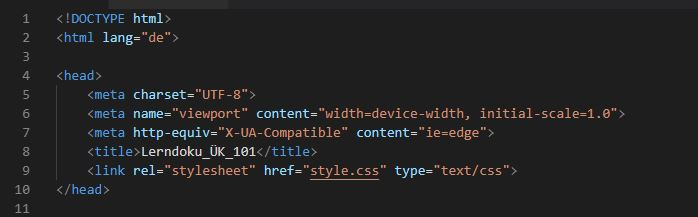

HTML
HTML (Hypertext Markup Language) ,ist eine textbasierte Auszeichnungssprache. Hierbei handelt es sich um das Format, in dem Webseiten geschrieben werden. In einem HTML-Dokumente schreibt der Ersteller den Text und Formatiert ihn anschliessend. Man kann aber auch Bilder, Videos oder Links einfügen und den ganzen Inhalt übersichtlich formatieren. Ein HTML Dokument besteht aus einem <head>, einem <body> und einem <titel> und das steht im Element <!DOCTYPE html> <html lang="de"> und <html>. Im head stehen alle Informationen der Seite zum Beispiel der link zum CSS. Der Titel der in der Titelleiste der Webseite erscheint, wird auch im head definiert. Im body sind die Texte, die Bilder und Filme. Der Inhalt des Bodys wir auf der Webseite eischeinen.
Elemente
Ein HTML-Element besteht aus einem Start-Tag, einem Elementinhalt und einem End-Tag.
Öffnendes-Tag:
Der
Starttag besteht aus einem <(öffnenden Spitze Klammer) html (Zeichen) >(schliessenden spitzen
Klammer).
Um den
Schliessendes-Tag:
Der End-Tag ist ähnlich aufgebaut wie der Start tag aber mit einem
Schrägstich
vor dem Zeichen. Zum Beispiel <(öffnenden Spitze Klammer) / html (Zeichen) >(schliessenden
spitzen
Klammer)
Attribute:
Grundsätzlich geben sie zusätzliche Informationen über den Inhalt eines Elementes
an.
Sie
bestehen aus dem Attribut-Namen und Attribut-Wert. Zwischen den Namen und den Wert befindet sich ein
Gleichstrich.
Der Attribut-Name beschreibt welch Art von Zusatzinformation angegeben wird, zum Beispiel eine «class».
Der
Attribut-Wert
ist die Information oder Einstellung des Attributs. Sie sollte in doppelten Anführungszeichen stehen.
Diese zwei Bilder zeigen wie ein Elemente aufgebaut sei können:
Text
HTML hat fünf Ebenen für Überschriften, die von <h1> bis <h6>reichen. Um einen Absatz zu
erstellen, verwendet
man den <p>-Tag. Standartgemäss macht es nach dem <p>-Tag einen Abstand für den
nachfolgenden
Abschnitt.
Um wichtige Wörter oder Abschnitte fett hervorzuheben, kann <b> genutzt werden. Und mit den Tag
<i>,erscheinen
sie kursiv. Das Element <sup> umschliesst die hochgestellt Zeichen und mit <sub> werden
diese
tiefgestellt.
Um im Text einen Zeilenumbruch einzufügen, kann man an der gewünschten Stelle <br/> eingesetzten.
Wenn
man verschiedene Themen deutlich trennen möchte, kann man mit <hr/> eine Horizontale Linie
machen.
Ist
der Inhalt von besonderer Wichtigkeit, kommen die Elemente <strong>, der Text wird fett
dargestellt,
und
<em>, der Text wird kursiv dargestellt, zur Verwendung. Zitate kann man in zwei Versionen
darstellen.
Entweder
durch die Verwendung einer <blockquote>, falls es sich um ein sehr langes Zitat über mehrere
Absätze
sich
handelt. Bei kürzeren Zitaten benutzt man <q>(wird von der Verwendung abgeraten). Für Abkürzungen
und
Akronyme kann das Element <abbr> verwendet werden. Das Attribut «title» wird im öffnenden Tag
eingesetzt.
Zum Beispiel: <p> < abbr title= «Professor»> Prof. </abbr > Dumbledore ist ein Magier
</p>
So sieht es aus: Prof. Dumbledore ist ein Magier.
Wenn man Quellenangaben machen, wird mit dem Element <cite> der Textteil kursiv gemacht. Das
gleiche
Prinzip gilt auch
für <dfn>, welches Definitionen kursiv gestaltet. Im Element <address> werden die
Kontaktdaten
des
Autors der Seite festgehalten. Inhalte, die in ein Dokument eingefügt wurden, können mit <ins>
unterstrichen
und mit <del>kann der Text der gelöschte wird durchgestrichen angezeigt werden. Die
gleiche
Funktion hat das Element <s>, welches allerdings für Preise (100.-) verwendet wird.
Besonderes Marekup
Markup ist der englische Begriff für die Textauszeichnung und dient dazu den Inhalt eines Dokuments
durch
Formatierungen
und Hierarchien zu strukturieren. Um diese Auszeichnung umzusetzen, werden Markup-Elemente, sogenannte
Tags,
eingesetzt. HTML ist wohl die bekannteste Auszeichnungssprache. Zum besonderen Makeup gehört zum
Beispiel
<
! DOCTYPE html> als Dokumenttypdeklaration. Mit <----> kann man Kommentare im HTML schreiben,
der
für
die Benutzer nicht sichtbar ist, aber sehr praktisch für die Autoren, denn sie können beschreiben was
sie
mit
dem Code dargestellt haben.
Das Attribut <id>:
Jedes HTML Attribut kann das Element <id>
aufweisen
und kann so von allen anderen Elementen unterschieden werden. Der Wert dieses Attribut muss mit einem
Buchstaben
oder unterstrich anfangen. Zwei Elemente auf derselben Seite darf nicht die gleiche <id>
aufweisen,
sonst
wäre der Wert nicht eindeutig. Durch die eindeutige Bezeichnung eins Elements ist es möglich, dieses
Element
anders zu gestalten als alle anderen Vorkommen des gleichen Elements auf der gleichen Seite.
Das Attribut <class>:
Alle HTML Elemente können auch das Attribut <class> aufweisen. Wenn man mehrere Elemente auf
einer
Seite
bezeichnen will und sie die gleichen Eigenschaften besitzen sollen und man nicht einzelne Element in
einem
Dokument
eindeutig bezeichnen will, kann man mit der <class> alle gewünschten Elemente bezeichnen. Dafür
schreibt
man bei den gewünschten Start-Tags die <class= "und den gleichen Wert">. Einige Elemente beginnen
bei
der Anzeige in
Browserfenster
immer auf einer neuen Zeile, die nennt man Blockelemente.
Zum Beispiel <h1>, <p>, <ul>und <li>
Es gibt auch inline-elemente die in derselben Zeilen bleiben.
Zum Beispiel: <a>, <b>,<em> und <img>
Texte und Elemente in Blöcken gruppieren:
Mit dem Element <div> werden Elemente in
einem
Block gruppiert. In einem Browser fangen <div> Elemente in einer neuen Zeile an. Wenn man aber
ein
<id>
oder <class> hinzufügt, kann man in CSS Regeln erstellen mit der man festlegen kann, wie
viel
Platz dieses <div> auf dem Bildschirm einnehmen und wie die darin enthaltenen Elemente gestaltet
werden
sollen. Texte und Elemente inline gruppieren:
Das Element <span > ist die inline Version von
<div >.
Man kann es in zwei verschiedenen Arten einsetzen. Einerseits wenn es kein anders geeignetes Element
gibt,
um
ihn von dem umgebenden Text abzusetzen, andererseits wenn es eine Reihe von Inline-Elementen sind.
Listen
Geordnete Listen:
Geordnete listen werden mit dem Element <ol> erstellt. Jeder Eintrag in der Liste
wird zwischen den
<li> Tag gestellt. <li> steht für Listeneintrag. Die Liste wird automatisch von dem Browser
eingerückt
und wird Nummeriert.
Untergeordnete Liste:
Mit dem Element <ul> erstellt man eine
Untergeordnete
Liste.
Auch hier sind die Einträge in <li> Elementen. Der Browser zeigt aber die Aufzählung als Punkte
an.
Man
kann in einer Untergeordneten Liste noch einen untergeordnete liste machen, das nennt man
Verschachtelte
liste.
Bei Untergeordnete Liste und Geordnete Listen wird empfohlen das CSS zur Formatierung zu benutzen.
Definitionslisten:
Sie werden mit dem Element <dl> erstellt und bestehen aus einer Abfolge von Begriffen, die mit
<dt>
angegeben werden, und deren zugehörigen Definitionen in einem <dd> -Tag.
Formulare
Mit Formularen kann der Benutzer die verschiedensten Dinge machen, zum Beispiel etwas suchen, Text eingeben oder eine Auswhl trefefn. Weil deise Theme so umfangreich ist, habe ich einen Link gefunden.
Formulare erstellenVideo, Audio, Flash
Flash:
Flash wurde verwendet um Animationen zu erstellen und es im Web anzuzeigen. Mit der Zeit
konnte
man
auch
Videos mit Flash laufen lassen. Dafür benötigt man ein Plug-in, namens Flash Player. Im Jahr 2005 hatte
aber
JavaScript
seinen eigenes Animation Programm entwickelt. Wodurch die nutzend des Flashs immer weniger wurde.
Nachdem
Apple
iPhone und kurz danach iPad rausbrachte, und sie sich weigerten Flash zu verwenden, wegen Sicherheit
gründen,
stoppte Adobe die Flash Produktion. Heut benutzt man fast keine Flash Videos.
Video:
Um ein Video auf die
Webseite
zu laden, benötigt man das leere Element <video> mit dem Attribut "src" zeigt man den Pfad
an
und "poste" um ein Bild anzuzeigen, bevor das Video geladen wurde. br
Audio:
Das Element <audio>, benutzt
man
um Audio Dateien einzufügen. Auch hier gibt es den Attribut "src" um den Pfad anzugeben. Mit den
Attribut
"controls"
zeigt Steuer Elemente an, mit "autoplay" spielt es automatisch ab, mit "loop" fängt es immer von neuem
an
sobald
es fertig ist und mit "preload" sagt er was er tun soll wenn "autoplay" nicht aktiviert ist. Hier ein
Link
zur veranschulichung:
Bilder
Um ein Bild einzufügen muss man zuerst richtig speichern. Am besten ist es, wenn man einen Eigenen Ordner für die Bilder hat. Bei der Auswahl der Bilder sollte man einige Dinge beachten zum Beispiel die Bilder sollten relevant sein, Informationen bieten, Die richtige Stimmung vermitteln, unmittelbar erkennbar sein und zur Farbpalette passen. Wen man keine eigenen Bilder einfügen möchte kann man gegen Gebühr, Bilder aus Foto Agenturen anfordern. Noch ein wichtiger Aspekt ist es die Bilder Richtig abzuspeichern. Die empfehlenden Formate sind JPG, PNG oder GIF. Beim Abspeichern ist es auch nützlich, wenn man die in der Grösse speichert indem man sie auch benutzt. Die Auflösung de Bilder sollte 72 Pixel pro Zoll sein da die meisten Bildschirme diese Auflösung haben. Ein Bild fügt man ein indem man das leere Element <img> benutzt. Der Attribut "src" um den Pfad anzugeben und "alt" um die Bildbeschreibung anzuzeigen falls ein Computer das Bild nicht laden kann. Wenn man das Element <figure> benutzt und darin alle Bilder einfügt kann man mit <figurecaption> das Bild mit einem Untertitel versehen.
Link
Mit dem Element <a> erstellt man Link. Alles was sich zwischen den öffnenden- und
Schliessenden-Tag
sich
befindet, kann der Benutzer anklicken. Der Link bestht aus dem Element <a> und dem Attribut
"href".
Email
Link:
Wenn man einen E-Mail-Adresse angeben möchte schreibt man als Wert des «href mailto:email
Adressen».
Link
in neuen Fenster öffnen:
Indem man <target> als Attribut nach <href> angibt und als
Wert
_blank
eingibt,
öffnet man die Seite auf einem neuem Tab.

Pfade
Jede Webseite hat eine URL (Uniform Resource Locator), das ist die Webadresse einer Webseite. Absoluter Pfad: Der Absolute Pfad beginnt mit dem Domänenamen der Webseite darauf kann ein Pfad zur einer einzelnen Seite folgen. Relative Pfad: Wenn man einen Link auf die gleiche Seite macht, hat man einen Relativen Pfad erstellt. Sie werden benötigt um Navigatoren oder Bilder in der Webseite einzufügen.
Tabellen
Tabellen sind dafür da Information in einem Raster darzustellen. Tabellen werden mit dem Element <table> erstellt. Den Beginn einer Zeile markiert man mit <tr>, die einzelnen Zeilen einer Tabelle werden durch <td> Elemente erstellt. Mit dem Element <th> kann man die Überschriften erstellen. Wenn man Spalten zusammenfassen möchte kann man schreibt man <td colspan= "Anzahl Spalten">. Wenn man Zeilen zusammenfassen möchte schreibt man rowspan= "Anzahl Zeilen". Man kann Tabellen in drei Teile teilen um mehr Übersicht zu haben. Das funktioniert mir <thead> (Tabellen Kopf), <tbody> (Tabellen Rumpf) und <tfoot> (Fussbereich). Diese Elemente steht man bevor man die Tabelle erstellt.
Selber ausprobieren